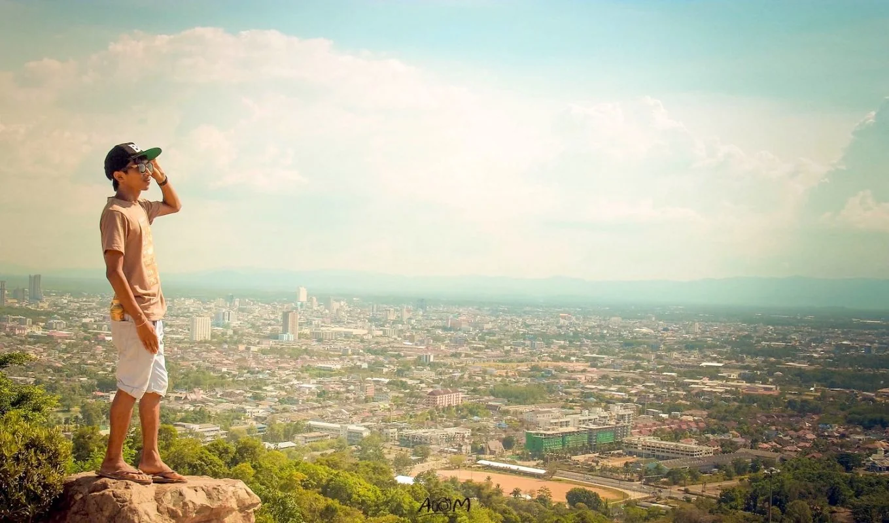
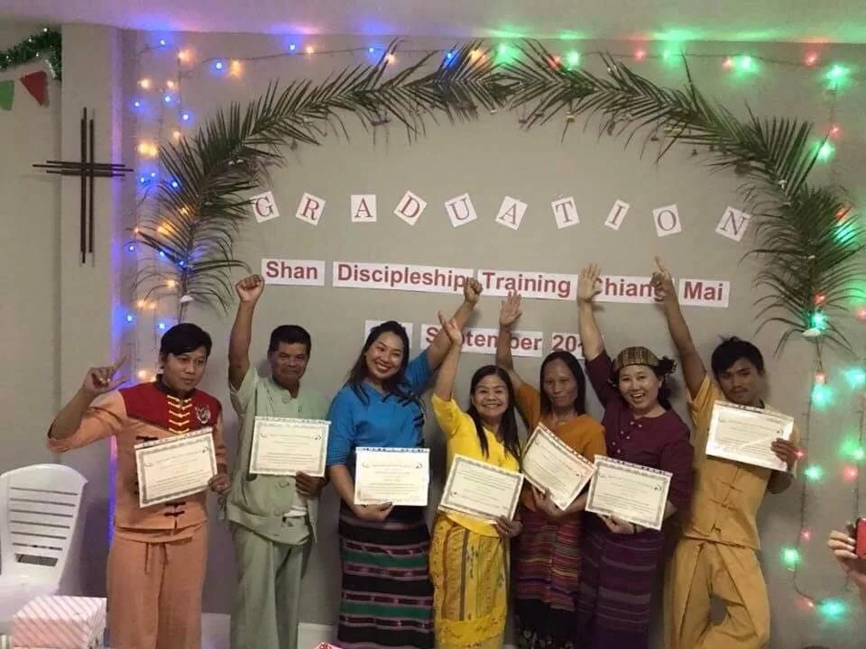
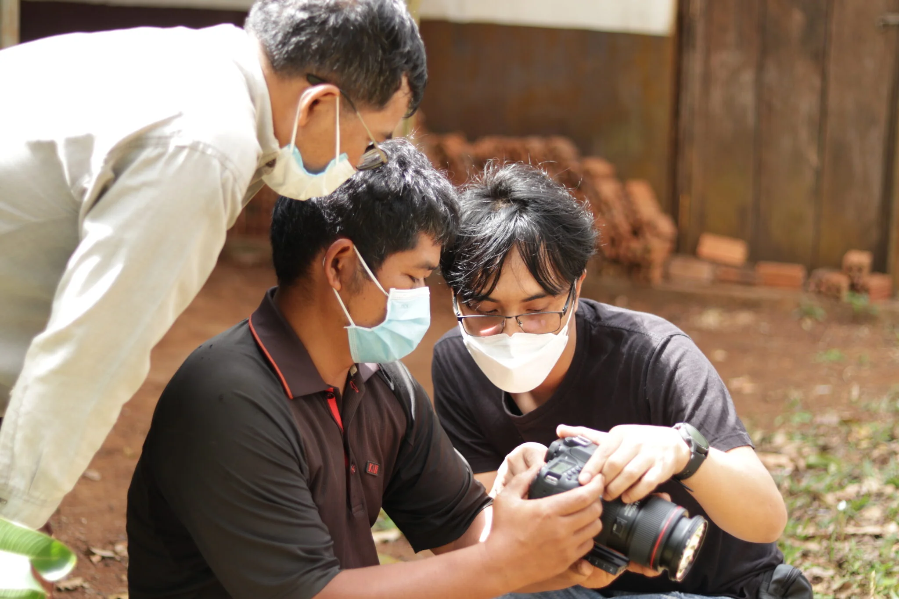
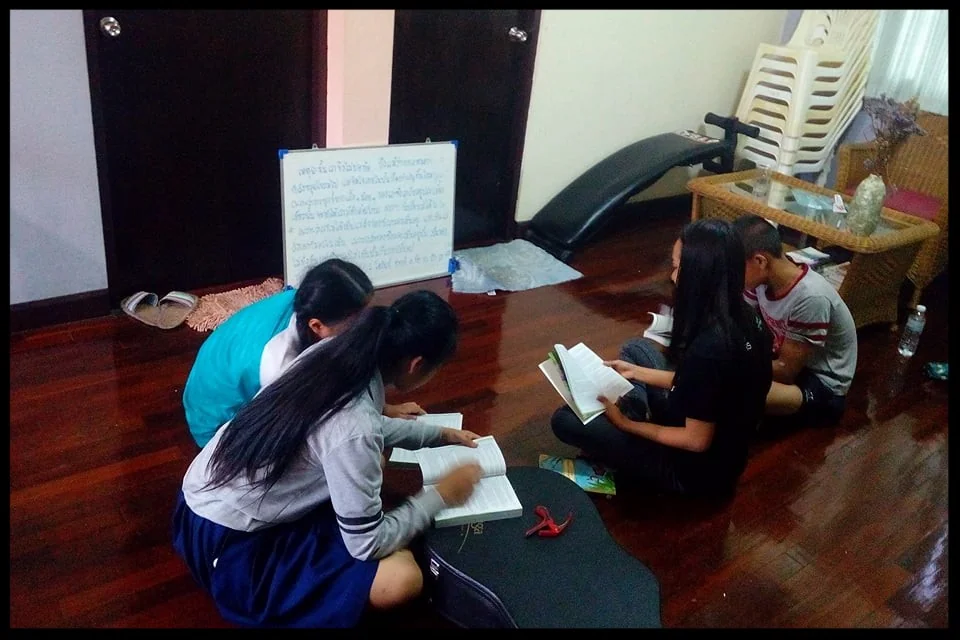
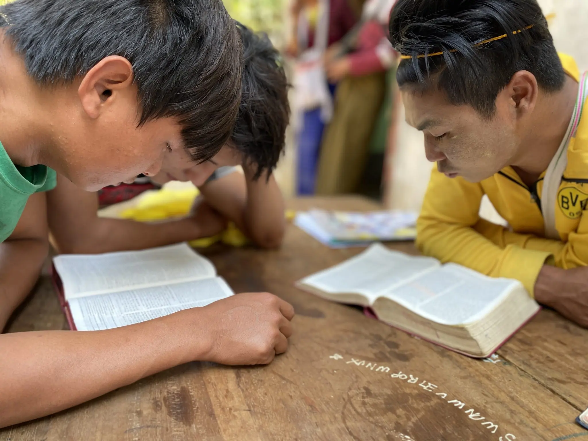
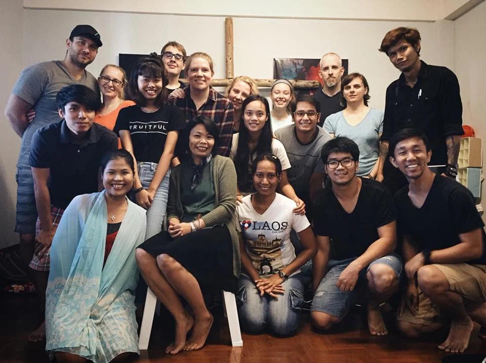
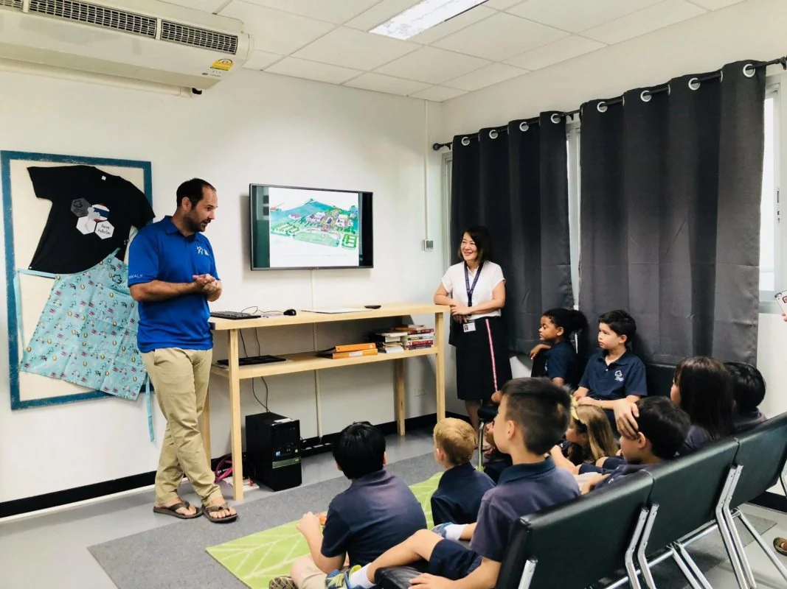

Who we are
YWAM stands for Youth With A Mission. It is a global volunteer movement of Christians, active in over 180 countries since 1960. The Chiang Mai base has been training and sending people across Asia for decades.

Field notes from northern Thailand. Issue 01.
Training schools in Chiang Mai, Thailand for people in their twenties who suspect their life is meant to count for something.
The two minute answer
YWAM stands for Youth With A Mission. It is a global volunteer movement of Christians, active in over 180 countries since 1960. The Chiang Mai base has been training and sending people across Asia for decades.
You join a residential school. Three months of learning in community, then two to three months in the field somewhere in Asia. You live, eat, study and travel with people from a dozen nations.
People roughly 18 to 30 who are hungry for God and unsatisfied with autopilot. You do not need to be a missionary type, a Bible expert or a certain nationality. Curiosity and willingness are the entry requirements.
Why we exist
That is the whole mission. Everything on this page, every school, every outreach team on a night bus to somewhere in Asia, exists for that one sentence.
In this issue

The front door. Foundations of faith, character and calling, then outreach somewhere in Asia. Most people start here.

For people drawn to the places nobody else goes. Language, culture and long haul mission strategy among unreached peoples.

Art, music, design and story in the hands of people who believe beauty is not decoration. Make work that means something.

Documentary filmmaking in the field. Camera, edit suite, real stories from real places. Leave with a reel and a reason.
For the makers
If you are a filmmaker, designer, photographer, writer or musician, you have probably been told your work is a nice extra. We think it is a language. Create and Project Video exist because some stories only art can carry.
You will shoot, compose, design and edit on real projects across Asia, alongside people who take both craft and calling seriously.
See work from past studentsBeyond the classroom




Life in Chiang Mai




Interviews
"I came for three months of filmmaking. I found out what I actually believe."
"DTS was the first time faith felt like an adventure instead of a routine."
"I arrived as a designer. I left as a designer with a direction."
Straight answers
School fees plus outreach come to roughly [AMOUNT] depending on the school. That covers housing, most meals, training and outreach travel. Most students fundraise part of it, and we help you plan that.
No. You need to be genuinely open to God. People arrive at every point of the journey. What we ask is honesty and willingness, not a spiritual CV.
We guide every accepted student through the Thai visa process step by step. It is well trodden ground. You will not do it alone.
You must be 18 by the school start date. Most students are 18 to 30, but there is no upper limit and every school has had older students thrive.
No commitment, no pressure. Tell us which school caught your eye and a real person on the base will write back within a few days.
Ask about a schoolPrefer email? [EMAIL ADDRESS]